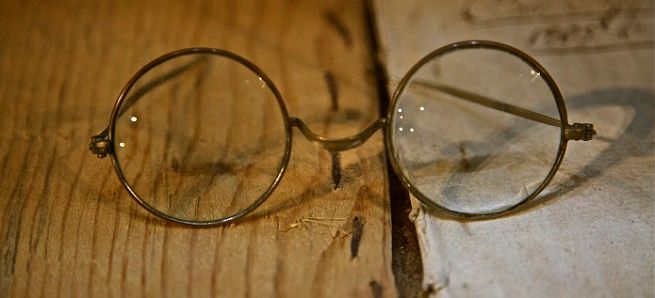
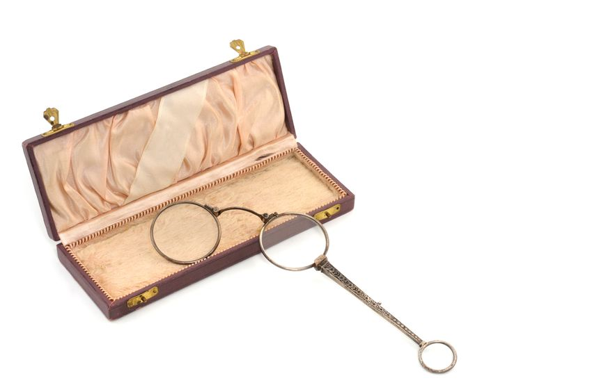
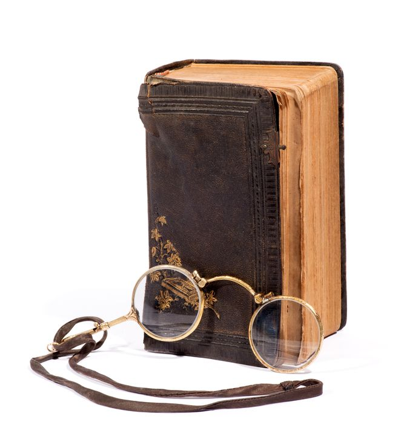

WHO INVENTED GLASSES?

The mystery of the origin of spectacles
No evidence exists to prove who the original inventor of glasses was, though many claims have been made to the invention. You might have heard that Benjamin Franklin invented glasses (he invented bifocals.) But glasses had already been around for 400 years by the 1700’s, when Ben Franklin was active. The most well-known refuted claim attributes the invention of glasses to Salvino D'Armati, a 13th century Italian from Florence. An epitaph found in the church of Santa Maria Maggiore in 1841 describes D'Armati as "the inventor of spectacles", but it’s now considered to be a fraud. However, there is reliable proof that spectacles were a late 13th century Italian development. We also know that English Franciscan Friar, Roger Bacon wrote about the scientific principles of corrective lenses in 1266, but there's no evidence that he applied that knowledge. And even before that, around the year 1000, Alhazen, an Arabian mathematician at Cairo, authored optical themed works which earned him the honor of being known as the “Father of Modern Optics.”

So the science of optics and corrective lenses was being studied and written about by scholars a thousand years ago, but when were the first pair of glasses actually created? From the year 1000, grinding technology to make simple magnifiers already existed, especially in regions where glass was already being produced (like Northern Italy.) The earliest depiction of glasses in a work of art is also from this region, a fresco by Tommaso de Modena in the Treviso Cathedral painted in 1352. The 14th century was a turning point for the history of spectacles. Florence became a center for the production of glasses. With the advent of the printing press, in 1450, the demand for vision correction was exponentially increasing as books became available to the general public.
The oldest pair of spectacles ever recovered were found beneath the floorboards at Wienhausen Abbey, a catholic nunnery in Germany. They are Rivet Spectacles which have no temples, or ear stems. They are secured to the face by clamping the nose between two lenses. The Wienhausen glasses are generally accepted to be circa 1400. None of the oldest glasses had temples. In fact, even as late as 1901, our American president Theodore Roosevelt wore a pince-nez, which just balances on the nose. Temple spectacles did not become popularized until the 1920’s, a trend helped along by a film star of the time, Harold Lloyd.

The Italians may lay claim to the invention of eyeglasses, but the Inuits and ancient Chinese can take credit for inventing sunglasses. In the 12th century Chinese sunglasses were made from panes of smoky quartz used to dim light streaming in. While Inuits used walrus ivory to to create goggles with small slits to peer through. Sunglasses similar to what we use today can be traced to 18th century English optician James Ayscough, who originally created spectacles with tinted lenses, which he thought could improve vision.
But the mass production of sunglasses did not come about until injection molding technology made it possible (after 1920.) In 1929, hair comb manufacturer Foster Grant introduced cheap sunglasses to the Atlantic City boardwalk and the industry has never looked back. But those sunglasses did not have the technology to fully protect the eyes. Bausch & Lomb was one of the original optical goods purveyors (since 1853) from Rochester, NY. In the 1930’s they were commissioned by the Army to create lenses to safeguard pilots' eyes from glare. Then, the second World War brought about the magic combination of 2 major players, which basically locked down the sunglasses market for the rest of the century. Ray-Ban utilized polarized lens technology created by Edwin H. Land (co-founder of Polaroid) in anti-glare aviator glasses, also originally invented for pilots. Soon the public was able to purchase this model, which was the first to filter out ultraviolet light.
The invention of spectacles (2004, November). Retrieved from The College of Optometrists website: http://www.college-optometrists.org/en/college/museyeum/online_exhibitions/spectacles/invention.cfm
Eyeglasses Through the Ages (2016, April). Retrieved from Antiquespectacles.com: http://www.antiquespectacles.com/history/ages/through_the_ages.htm
Who Invented Sunglasses (2011, July). Retrieved from Glasseshistory.com: http://www.glasseshistory.com/glasses-inventor/who-invented-sunglasses/
Timeline of Eyeglasses (2010, April). Retrieved from American Academy of Ophthalmology: http://www.museumofvision.org/exhibitions/?key=44&subkey=4&relkey=35